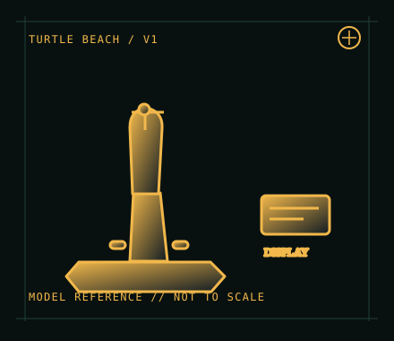

[ JOYSTICK CONTROLLERS // IDENTIFIED COMPONENT ]
Turtle Beach VelocityOne Flightstick
Compact Xbox and PC flight controller with Hall-effect sensing, onboard display and integrated audio support.

MODEL IDENTIFICATION: Turtle Beach VelocityOne Flightstick; check the product label and hardware revision before firmware or accessory service. Published family specifications may not establish the revision or condition of an individual unit; compare its label and included parts with the linked documentation.
Model specifications
| Catalog subcategory | Joystick controllers |
|---|---|
| Exact model / identifier | Turtle Beach VelocityOne Flightstick; check the product label and hardware revision before firmware or accessory service. |
| Design and controls | Integrated stick with Hall-effect sensing, twist rudder, multiple axes and controls, OLED flight-management display, configurable buttons and a 3.5 mm headset connection. Control layout and accessory behavior should be confirmed in the matching handbook. |
| Physical interface | Wired USB connection using the supplied USB cable; the headset jack is a separate audio path. The controller presents platform-specific input rather than a universal console standard. |
| Host compatibility | Officially designed for Xbox One, Xbox Series X|S and Windows 10/11 PC. Do not assume compatibility with PlayStation or Switch. On PC, games must support the controller’s axes/buttons; Xbox operation depends on a compatible game. |
| Driver and configuration | Basic connection is designed to be plug-and-play on listed platforms. Use the Flightstick support portal and handbook for firmware, setup and configuration utilities; install only the matching current software when needed. |
Setup and control mapping
Calibrate stick axes and twist rudder, then assign throttle and secondary controls in the game. The display and control wheel can provide onboard functions beyond the game’s mapped inputs; test audio separately from controller enumeration.
Before use, connect the device directly to the stated host, confirm it appears once in the operating system’s controller list, and test every axis and button. Keep host calibration separate from in-game dead-zone and sensitivity settings so later maintenance can reproduce the baseline.
Preservation and service notes
Inspect the USB lead, grip and wrist rest, and avoid stressing the headset jack. Record firmware, host platform, display behavior, audio output and axis calibration as separate observations; retain the handbook and configuration notes.
Revision caveat: The Flightstick is not the larger VelocityOne Flight yoke system. Its console support is specific to Xbox licensing, while Windows recognition and title bindings are game-dependent.
For a physical archive entry, record the as-found label, serial/part number where present, accessories, host OS, driver or firmware version, and test method. Separate observed condition from published specifications.
References and support
- VelocityOne Flightstick — Turtle BeachManufacturer product reference and platform/product identification.
- VelocityOne Flightstick support and handbook — Turtle BeachOfficial model-specific setup guide, pilot handbook and support information.
- VelocityOne Flightstick Quick Start Guide — Turtle Beach PDFManufacturer-hosted quick-start PDF for setup and connection.
Vendor pages and downloads can be revised or retired. Preserve the applicable manual locally and note its revision; use the exact product label when choosing firmware or drivers.